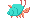

An experiment in decentralized, collaborative podcast making ~ Scrycasting

Who is responsible for producing The Local Gossip? You are! Localhosts throughout The Chorus are collaborating to deepen community relationships while exploring stories, weaving tales and finding new metaphors to understand the terrains and potentials of cypherspace from their subjective vantage points.
Within cypherspace terms, each episode is a world of its own. Each episode will have its own thread, forks & web on SSB. Each episode will also have its own DAT site hosting the files, show notes & other treats associated with the episode world. These will all be linked to below within the index.
Join voices with The Chorus (requires Beaker Browser)
Most of us are carrying around recording devices all the time! Add your voice to mix new dulcet tones to the harmonies.
The Local Gossip profile on SSB: @URIdonHSF4eAIZVqPPe6I+lkDd19Bl0T/t4/umwtbo4=.ed25519
The Local Gossip channel on SSB: #the-local-gossip
Contact dan hassan @NeB4q4Hy9IiMxs5L08oevEhivxW+/aDu/s/0SkNayi0=.ed25519 on SSB or email them if you would like a link added pointing to an episode or if you would like help making one, releasing one or any of the *other ones.
Hum along with The Chorus
Talking not your vibe? That's cool! There are other ways to participate. Each episode will have its own DAT site so you can participate by seeding (requires Beaker Browser) this Index and any episodes which you particularly enjoy! You could try your hand at making a DAT site (requires Beaker Browser) for an episode that you liked (it's kinda like making a zine + glyph has made a template (requires Beaker Browser)), or hosting a chat on SSB or helping to transcribe an episode to make it more accessible. There's also stuff like, you know, introducing new friends to join the Chorus and help us build a solarpunk future (requires Beaker Browser)!... or if none of that floats your boat perhaps we can tempt you to draw a hermes below and send us a screenshot :-)
Here's a canvas for you to draw on. Reset the canvas by clicking the box at the top right or you can dip your mouse in the colour palate at the top left. We like trying to draw hermes.
INDEX:
-
Peers of Cypherspace Podcast #naming-party
localhost: dan hassan (requires Beaker Browser)
ssb: %1gMLyzdIiLZFp71wpYFTCLntEPpQ4BM2mF3JrrCbcik=.sha256
-
episode 0 ~ invoking participatory peer scrycasts
localhost: dan hassan (requires Beaker Browser)
ssb: %w258lEVlYp3rpjDAcJt/tYsBcVzGo4OdE43tDaMp8D0=.sha256
-
episode 1 ~ git-ssb
localhost: dan hassan (requires Beaker Browser)
peers: cel & noffle
ssb: %6wdl9bLeIWdtS/ZU7OEjzB0zM/qfguqR1jcKo4K5Pls=.sha256
-
episode 2 & 3 ~ solarpunk, travels & metaphors
localhost: dan hassan (requires Beaker Browser)
peers: angelica & zach (requires Beaker Browser)
ssb: %uZ34PPG5fyC+7S5v55TByJxEha1kCKKKhADouu9vUx0=.sha256
-
episode 4 ~ SSB-Chess
localhost: glyph
peers: happy0, frankiebee, christian, dan hassan
ssb: %1k1CUDnbPGFoY13rqoXBWVo4JqT+cq7zsH2rDWs9EKo=.sha256
-
episode 5 ~ an intersecting journey towards open economic networks
localhost: dinosaur
peers: bobhaugen
ssb: %CikJWTvIHWntPzsrGc8lOm+d0hxDFTq6aO/3nDc4giU=.sha256
-
episode 6 ~ #talenet, #35c3 and #1komona
localhost: dan hassan (requires Beaker Browser)
peers: [@katze](@3a/8VgfLqnmmqO3mf0al1piEbKqvg1LqRoNd2pcsLLo=.ed25519) & [@cryptix](@p13zSAiOpguI9nsawkGijsnMfWmFd5rlUNpzekEE+vI=.ed25519)
ssb: %IKgYi6smzF/7PmwJwOlCFZsMvwUu/Xcy0Yhyu36owQA=.sha256
-
episode 7 ~ Put Your Money Where Your Mouth Is :: On scuttlebutt, P2P, Astrology, Queering the Internet, Sex Work, Designing With and for the Margins, Internet and Intersections of Oppressions
localhost: dan hassan
peers: anna & marissa
localhost: anna
peers: dan hassan & marissa
ssb: %607dXSQuOPzm6Ph/alK2/XP96xZ1Ql23CLVtmRSzj+Y=.sha256
-
episode 8 Dark Crystal Diaries 0 ~ In dialog with Cory Doctorow
localhost: dan hassan
peers: cory doctorow
ssb: %YQqmTXmHM5g4sIDOMFs6ZRtr/qhcy1csarsfK2caqvs=.sha256
-
episode 9 Fungi, Forests & Friends
localhost: glyph
peers: kieran
ssb: %+s2oKiBKTPKHVUYMNGpa0oV8yxiYPnO88K8ic6A3wOU=.sha256
-
episode 10 Back to the Land
localhost: dinosaur
peers: luandro
ssb: %5HNZSRhkZeaZWAWuZ8cY5JQB8bLihy0fo6GFRUJXqWM=.sha256

- writings we love:
- the future will be technical
- A Praise Chorus (requires Beaker Browser)
- Building Consentful Tech (requires Beaker Browser)
- Distributed Web of Care
- Racial Justice in the Distributed Web
- fellow travellers & podcasts exploring cypherspace:
- DATCAST (requires Beaker Browser)
- Code Podcast
- STEAL THIS SHOW